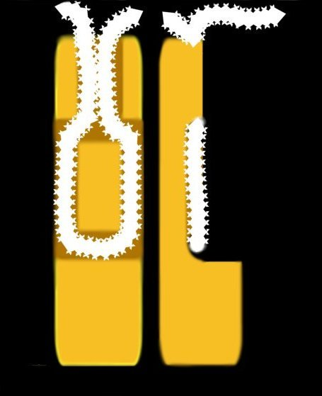
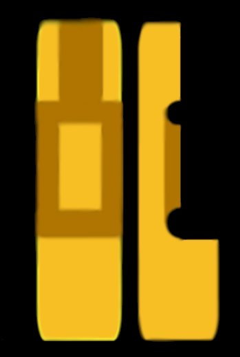

|
| Here's my little guide on how to make your own
nunchaku. I will explain step by step on how to make them. If nunchaku are ILLEGAL in your state or even country, please obtain a weapons licience. If your state or country doesn't allow any sort of nunchaku, DON'T MAKE THEM. I am no liable or responcable for anything you make from the instructions on this page. This guide is for 12inch chucks, and American Style Chucks, 14inch. |
|  |
| STEP 1 - What to buy and where to
cut. Firsth thing, go to your local hardwood store or industrial supplies store and buy yourself enough hardwood for the amount of chucks you want to make. You need around 12 inches per handle (14 for amercian style) per each chuck. 1 pair = 2 handles, 2 handles = 24inches (28 inches for AS) Always get a little extra then what you need, so that you can cut even chucks. Make sure you get HARDWOOD. I use tas oak myself, anything like pine will be too soft and will vibrate too much everytime you come into contact with anything. They will also splinter after awhile. You will also need a fair amount of NYLON rope. I always get about 3 metres, so i don't have to keep buying it. :) If you can get your hands on Chain Repair Kits, Buy them instead. They will save you A LOT of time, and chains are a lot faster. If you want to paint or stain your chucks, get enamel high gloss paint for colors (including black and white), or for stains, any stain shade you want. If you do stain your chucks, get protective gloss paint too. If you want nightglow chucks, get glow in the dark paint. The enamel gloss paint will dry smooth and have somewhat of a reflective surface to it. It's also so much easier to maintain and keep clean. The stain gloss is to protect the stain and will also give it a reflective surface. Once you've got everything you need. Simply measure out 12inches (14 for AS) per each handle. Cut OUTSIDE of the line, don't cut to the inside of your chucks will end up shorter then they should be. That's why you need the extra wood. STEP 2 - Drilling the Holes Ok, now you have what you need to make your nunchaku. It's time to make the holes for your rope. Go to step 5 for chain kit installion. Start by measuring 1 or 2 inches down from the top of each handle. Mark the 1st drill hole, then from the hole you just marked. Measure out another hole 1 or 2 inches down, I tend to have my holes 1 inch down then 1 inch down from the top hole for 12inch handles.. 2 inches for 14 inche handles. Drill the holes so that they're big enough to fit the nylon cord. On one of the handles make the bottom hole big enough to fit the nylon cord in twice. Reason why, is that I tie my knots in the bottom hole of the chucks. So the knot isn't in my way. Trust me, you'll thank me for it. if you do that too. :) If you have a chisel set, you can carve out the sides between the top hole and the bottom hole. So that you can have a groove for where the nylon rope will fit, and not get in your way. Look at the picture to the right of this guide to see the sides and cut away view of what the chucks should look like. Don't get confused about the pictures. The top part of the chuck has been CUT off, so it shows you the inside of the chucks. Now comes the top vertical hole. Simply drill it down to reach the first hole. That's it for the holes. Try to keep the holes on the side, going in the SAME direction as each other. Try to keep the vertical hole as centered as you can. If you don't they may split. STEP 3 - Sanding the Chucks Sand back the nunchaku till they're nice and smooth. If you can, try to sand back the corners of the holes. If you can't for some reason, sand back the holes. Use WAX and make the corners smooth. The reason why, is so that the rope doesn't slowly get cut up while you use them. The first chucks I made. The rope got cut through and my chucks went flying. :( STEP 4 - Painting the chucks. Now just paint the chucks into whatever color or stain you want. Step 5 - Threading the rope, tie the knot, and chain kit installation Simply look at the picture to the bottom of this step to see how the rope should go through the chucks, just weave the rope through starting from the vertical top hole, going down around into the bottom hole. Through to the other side, back up to the top hole then out through the vertical hole. Straight to the other handle and repeat it so that you can tie a knot. I tie my knot in the middle of the bottom hole. But you can tie yours to the side of the chuck. (like in the picture too the bottom right) The rope should be the length of your hand. For american style it should be around 1 and 1/2 inches long. Chain Kit Installion. It's simple, make sure the end of the chain kit fits one the end of your handles. Try to make it fit tight. If it doesn't fit, sand the top back till it does. When it fits, drill the hole through the chain kits hole and make sure it goes straight through into the other hole in the chain kit. Get something like a RIVET GUN and put some pop rivets into the holes. On both sides, 1 male rivet on one side, and 1 female rivet through the other. Simply do it the same on the other handle. Wella, you have a nice pair of nunchaku. If you need to remove the rivets on a later date, to repair or replace the chain kit. Simply drill the off the tops of the rivets till they drop off. |
|  |
|
| BOTTOM HOLE |
| TOP HOLE |
| VERTICAL HOLE |
| TIE BOTTOM KNOT HERE |
| TIE SIDE KNOT HERE |